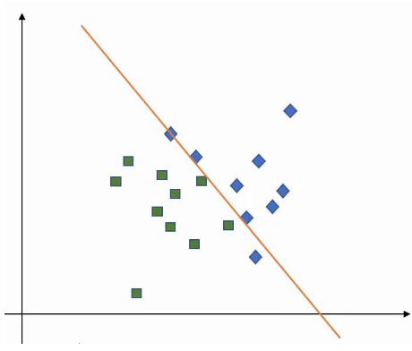
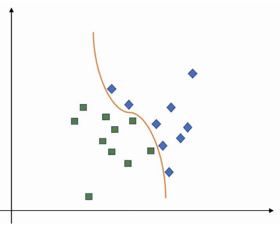
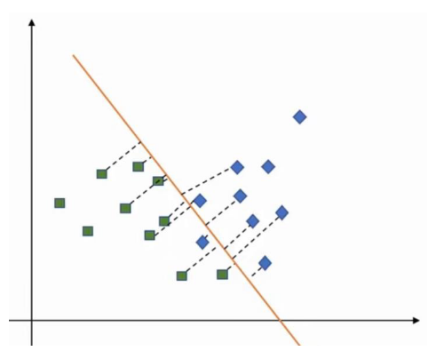
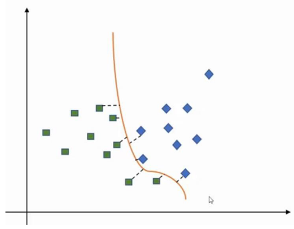

Máquinas de Vetores de Suporte
- Algoritmo de Machine Learning supervisionado que pode ser utilizado para problemas de classificação (quase) e problemas de regressão;
- Geralmente, um algoritmode aprendizagem tenta aprender o máximo sobre as características comuns (o que diferencia uma classe de outra) de uma classe e a classificação será feita baseando-se nessas características representativas sobre as quais aprendeu (a classificação é baseada na diferença entre as classes). No entanto, as SVM trabalham de forma oposta, ou seja, procuram a similaridade entre classes e utiliza-as como "vetores de suporte";
- A ideia principal é dar plot a cada item daos dados como um ponto num espaço \( n \)-dimensional (em que \( n \) é o número de atributos), fazendo a classificação a partir da descoberta de um híper-plano que diferencie as classes;
- Funciona bem para classifcar datasets com muitos atributos;
- Encontra vetores de suporte que dividem os dados;
- Aplica kernels de forma a representar os dados em espaços de vários dimensões para encontrar os híper-planos que podem não surgir em dimensões pequenas;
- Os híperlanos são barreiras de decisão que ajudam a classificar os pontos dos dados;
- Pontos que se encontrem em ambos os lados de um plano podem ser atribuídos a diferentes classes;
- A dimensão do híper-plano dependerá do número de atributos, ou seja, no caso de só termos 2 atributos, o híper-plano será uma linha, já no caso de termos 3 atributos, o híper-plano será um plano 2D.
Como funciona?
- Tem-se um conjunto de dados de treino etiquetado;
- Desenha-se um híper-plano que separe as classes;
- Podendo desenhar vários, deve escolher-se aquele que maximize a margem entre classes;
- Os pontos presentes nas linhas de margem de cada classe são denominados de vetores de suporte.
Hinge Loss
- Pretendemos maximizar as margens entre os pontos dos dados e o híper-plano definido. Para isso, as SVMs utilizam a hinge loss:
\[ l(y) = max(0, 1 - t \dot y) \]
- Isto irá:
- Retornar 0 no caso do valor previsto e o valor real serem ambos positiovs, negativos ou nulos;
- Senão, irá calcular a perda.
Kernels
- Diferentes Kernels providenciam diferentes resultados para um dado dataset:
- Linear;
- Gaussian Radial Basis Function (RBF);
- Polinomial;
- Sigmoidal.
Regularização
Baixa Regularização
O otimizador irá procurar por um híper-plano que tenha uma grande margem, mesmo que isso implique classificar mais pontos de forma errada.

Alta Regularização
O otimizador irá escolher um híper-plano com uma menor margem, caso isso implque uma melhor classificação dos pontos.

Gamma
Gamma Baixo
Pontos longe do possível plano são considerados no cálculo do plano.

Gamma Alto
Apenas os pontos perto do possível plano são considerados.

Margem
Má Margem
Está demasiado perto de uma classe e distante da outra.
Boa Margem
Está equidistante de ambas as classes.
Pontos
Fortes
- Muito efetivo em datasets com um grande conjunto de atributos (p.e. financeiros ou médicos);
- Efetivo nos casos em que o número de atributos é superior ao número de pontos de dados;
- Utiliza um subconjunto de pontos de treino na função de decisão dos vetores de suiporte que tem um consumo eficiente de memória;
- Funções de kernel diferentes podem ser especificadas para uma função de decisão (é possível utilizar kernels comuns, mas também se pode criar o próprio kernel).
Fracos
- Se o número de atributos for muito maior que o número de pontos, é crucial evitar o overfitting aquando da escolha da função de kernel e do termo de regularização;
- Não providenciam estimativas de probabilidades de forma direta. São calculadas utilizando um método caro de n-fold cross-validation;
- Trabalham melhor em conjuntos de amostras pequenos, devido ao elevado tempo de aprendizagem que requerem.
Regressão de Vetores de Suporte
- Algoritmo supervisionado para prever valores discretos;
- Usa os mesmos princípios que as SVMs;
- A ideia principal é encontrar a melhor linha de enquadramento, sendo que será aquela que tiver o número máximo de pontos nela;
- Basicamente, o objetivo passa por considerar os pontos que estão na linha fronteira de decisão.
Pontos
Fortes
- Robusto no tratamento de outliers;
- O modelo de decisão pode ser facilmente atualizado;
- Tem uma grande capacidade de generalização, com uma grande taxa de acerto;
- A sua implementação é fácil.
Fracos
- Não é aplicável em datasets grandes;
- Nos casos em que o número de atributos for maior para cada ponto de dados que o número de amostras de treino, o algoritmo terá um desempenho abaixo do esperado;
- O modelo de decisão não tem um bom comportamento quando o conjunto de dados tem algum ruído.